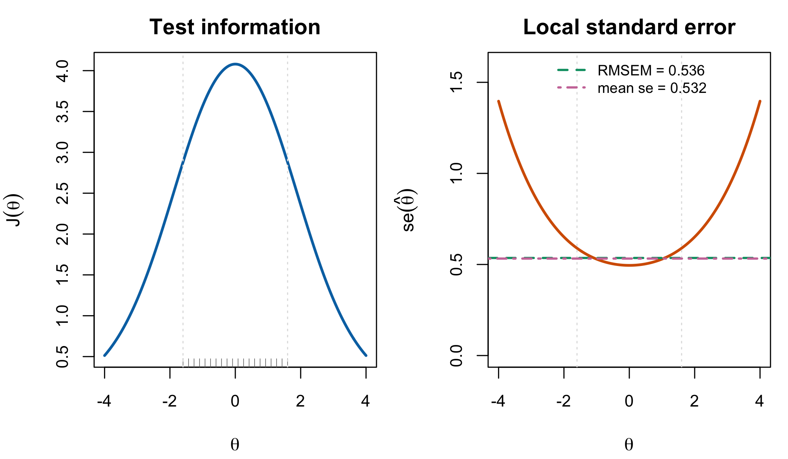

7 Information and Measurement Error
Chapter 6 produced ability estimates. This chapter asks how precise they are, and it does so carefully, because the answer is the raw material for Chapter 8 and because the usual summary of it carries a qualification that the manuscript drops.
The chain is short. Fisher information measures how sharply the likelihood distinguishes nearby abilities. Its reciprocal is a variance, and its square root a standard error, at a given \(\theta\). Averaging those variances over persons gives a test-level summary, and that summary is one of the two ingredients of every reliability coefficient in Chapter 8. Each link in the chain is conditional on something, and keeping track of what is the point of the chapter.
7.1 Information
For a single person with item parameters held fixed, the Fisher information about \(\theta\) carried by the response vector is the expected curvature of the log-likelihood:
\[ \mathcal{J}(\theta) = -\operatorname{E}\!\left[ \frac{\partial^2 \log \Pr(\mathbf{U}_p = \mathbf{u}_p \mid \theta, \boldsymbol\beta, \boldsymbol\lambda)}{\partial\theta^2}\right] = \sum_{i=1}^{I} \lambda_i^2\, \pi_{pi}(1 - \pi_{pi}), \tag{7.1}\]
and under the Rasch model, where \(\lambda_i \equiv 1\), this is \(\mathcal{J}(\theta) = \sum_i \pi_{pi}(1-\pi_{pi})\).
Three properties of Equation 7.1 do the work in what follows.
Information is additive over items. Each item contributes \(\mathcal{J}_i(\theta) = \lambda_i^2 \pi_{pi}(1-\pi_{pi})\) and the test’s information is their sum. Nothing in Equation 7.1 couples items, which is a consequence of the within-person local independence of Section 3.2 and not a separate assumption. Additivity is what makes test assembly a matter of accumulating information and what makes adaptive testing possible at all.
Each item is informative near its own difficulty and almost nowhere else. The factor \(\pi(1-\pi)\) is maximized at \(\pi = 1/2\), that is at \(\theta = \beta_i\), where it equals \(1/4\); at \(\pi = 0.2\) it is \(0.16\), and it falls away quickly. An item tells you a great deal about people it is well matched to and little about anyone else. Targeting is the name for arranging that match, and it is the second lever — after test length — on how precisely a given person is measured. Figure 3.1 showed both panels.
Discrimination enters quadratically. In Equation 7.1 the slope parameter is squared, so doubling an item’s discrimination quadruples its peak information, which rises to \(\lambda_i^2/4\). Under the Rasch model this lever is switched off by construction and information depends only on targeting and length. That is worth naming as a structural difference rather than a parameter count: a Rasch test can be made more informative only by adding items or aiming them better.
Chapter 24 returns to this disabled lever and asks the narrower Part VIII question: what changes when discriminations are free to redistribute information across the trait scale? The present chapter supplies the common information calculus; the later chapter studies that 2PL allocation problem.
A Rasch-only shortcut worth not generalizing. Under the Rasch model \(\partial\pi_{pi}/\partial\theta = \pi_{pi}(1-\pi_{pi})\), so item information equals the slope of the item characteristic curve. Debelak et al. (2022, § 3.6) state the identity and immediately warn that it does not hold in general. Under the 2PL the slope is \(\lambda_i\pi(1-\pi)\) while the information is \(\lambda_i^2\pi(1-\pi)\); the two coincide only when \(\lambda_i = 1\). The intuition “information is the steepness of the curve” survives; the identity does not.
7.2 From information to a standard error
Under the regularity conditions of Chapter 6, the maximum-likelihood ability estimator is asymptotically normal with variance \(\mathcal{J}(\theta)^{-1}\), so
\[ \operatorname{se}(\hat\theta_p) = \mathcal{J}(\hat\theta_p)^{-1/2} \tag{7.2}\]
is the conventional local standard error of measurement — local because it is a function of \(\theta\) and therefore differs from person to person.
That person-specificity is the substantive content of Equation 7.2 and is easy to lose. A test does not have “a” standard error. It measures people near the centre of its item difficulties precisely and people in the tails poorly, and the ratio between the two can be large on a short test. Figure 7.1 shows the two curves together: information peaked over the range the items cover, and the standard error rising steeply outside it.

Two qualifications belong with Equation 7.2, and both matter later.
It is conditional on \(\boldsymbol\beta\). Equation 7.2 is the sampling standard deviation of \(\hat\theta_p\) given the item parameters. Proposition 6.1 showed that the operational estimator substitutes \(\hat{\boldsymbol\beta}\) and that the unconditional variance therefore carries a second term which Equation 7.2 omits. Everything downstream of Equation 7.2 in this chapter and the next inherits that qualification, and Chapter 8 says where it lands.
It is asymptotic in test length. Equation 7.2 is the leading term of an expansion in \(I^{-1}\). On a twenty-item test it is an approximation whose quality varies across the scale, and at a perfect or zero score it does not exist at all, because Equation 6.1 has no finite solution there (Section 6.4).
7.3 From local errors to a test-level summary
Reliability needs one number, not a curve. The standard device is to average the local error variances over the persons actually measured:
\[ \mathrm{MSEM} = \frac{1}{P}\sum_{p=1}^{P}\operatorname{se}(\hat\theta_p)^2, \qquad \mathrm{RMSEM} = \sqrt{\mathrm{MSEM}} . \tag{7.3}\]
Wright and Masters (1982, § 5.5) define exactly this, writing the mean square measurement error as \(MSE_P = \sum_n s_n^2 / N\) and the root mean square measurement error as \(SE_P = (MSE_P)^{1/2}\). The notation differs; the quantity does not.
Proposition 7.1 RMSEM is not the error of a typical person. Derived here; no originality claim
Because \(x \mapsto \sqrt{x}\) is concave, \(\operatorname{E}[\operatorname{se}(\hat\theta_p)] \le \sqrt{\operatorname{E}[\operatorname{se}(\hat\theta_p)^2]} = \mathrm{RMSEM}\), with equality only if \(\operatorname{se}(\hat\theta_p)\) is constant across persons. Averaging on the variance scale and then taking a square root gives a number larger than the average standard error, and the gap grows with the spread of the error curve.
Proof. Jensen’s inequality applied to the concave function \(\sqrt{\cdot}\). ∎
Proposition 7.1 is elementary and worth stating because RMSEM is routinely read aloud as “the average standard error,” which it is not. The choice to average on the variance scale is not arbitrary — variances are what add, and it is the variance average that enters the reliability ratio — but the resulting number is a root-mean-square, and the distinction matters whenever the error curve is steep, which is exactly the short-test case.
There is a second, sharper distinction hiding in Equation 7.3, and it becomes a defect in the next chapter if not drawn now.
Equation 7.3 averages over the realized sample: it is a statistic, computed from the \(P\) people who took the test. The population analogue, \(\operatorname{E}_G[\mathcal{J}(\theta)^{-1}]\), averages over the latent distribution \(G\) and is a property of the design. They are not the same object. Agreement is an asymptotic plug-in claim, not an automatic unbiasedness identity: it requires a representative sample, a long enough test for the local-information approximation, consistent ability estimates, and negligible boundary handling. With finite tests, evaluating the nonlinear function \(\mathcal{J}(\hat\theta_p)^{-1}\) can bias the realized average in either direction.
The distinction is invisible while \(G\) is fixed and the sample is large, and it becomes visible in exactly the setting this book cares about: a simulation that sets \(\sigma^2_\theta\) and then reads a reliability off a realized sample of twenty people is mixing a design parameter with an estimator. Chapter 8 § 4 takes this up as the distinction Wright and Masters make by subtraction and the simulation makes by construction.
7.4 From information to the observed EDF
Information also explains why the empirical distribution of noisy estimates is not the latent distribution. Under the local approximation, the forward measurement relation is \(\hat\theta_p=\theta_p+\varepsilon_p\) with conditional mean zero and conditional variance \(\mathcal J(\theta_p)^{-1}\). The observed EDF therefore mixes the latent distribution with person-specific error kernels. Even in the constant-error independent case,
\[ \operatorname{Var}(\hat\theta_p) =\operatorname{Var}(\theta_p)+\operatorname{E}\{\mathcal J(\theta_p)^{-1}\}, \]
so the raw estimate ensemble is over-dispersed on the variance scale. With the actual trait-dependent information curve, the operation is a heteroskedastic mixture rather than a single convolution; it need not move the EDF in one direction at every threshold.
This is the bridge to the later apparent paradox. Chapter 11 shows that posterior means can be under-dispersed because shrinkage removes sampling noise and more, while Chapter 18 constructs an ensemble correction from posterior moments. The information curve describes the forward noise that broadens raw estimates; it does not by itself identify \(G\) or supply a distribution-recovery action.
7.5 What information does not include
Equation 7.1 is the curvature of a likelihood, and a likelihood is a model. Three sources of uncertainty are therefore outside it entirely, and none of them is small in the settings this book studies.
Uncertainty in the item parameters. Discussed above and in Proposition 6.1. The omission is defensible when \(P \gg I\) and is not automatically defensible at \(P = 20\).
Model misspecification. If the item response function is wrong — the wrong shape, a missing guessing floor, multidimensionality — then Equation 7.1 measures the curvature of the wrong likelihood. It will still return a small standard error; the estimate will simply be precisely wrong. Information is a statement about a model’s internal precision, never about its adequacy.
Uncertainty about \(G\). Nothing in Equation 7.1 knows what the latent distribution is, which is a feature here rather than a defect: it is why the same information function appears in the frequentist and Bayesian accounts alike. But it means information alone cannot answer the question Chapter 8 asks, which is how much of the observed spread among people is real. That question needs \(\sigma^2_\theta\) as well, and the pairing of the two is what a reliability coefficient is.
7.6 Sources and provenance
The information function Equation 7.1, its additivity, and the item-level form follow Debelak et al. (2022, sec. 3.6, eqs. 3.5–3.6), who state the Rasch case and attribute it to Fischer and Molenaar (1995, p. 55); that primary is not held and the citation is secondary under R5. The warning that the information-equals-slope identity is Rasch-specific is theirs, in the same section, and is repeated here because it is the kind of shortcut that survives into 2PL discussions where it is false.
The 2PL form of Equation 7.1 follows by the same expected-curvature calculation with \(P_i' = \lambda_i P_i Q_i\) and is written out in Section 6.3; it is standard and no novelty is claimed. Equation 7.2 is the usual asymptotic reading of the information, following Baker and Kim (2004, ch. 3).
Equation 7.3 is Wright and Masters’s (1982, sec. 5.5) mean square measurement error under this book’s notation. Proposition 7.1 is elementary and derived here.
The conditional-on-\(\boldsymbol\beta\) qualification carried through this chapter is the one the submitted manuscript omits when it defines the squared standard error as the inverse Fisher information; it is logged as C-012 and its consequence for the reliability coefficients is taken up in Chapter 8.